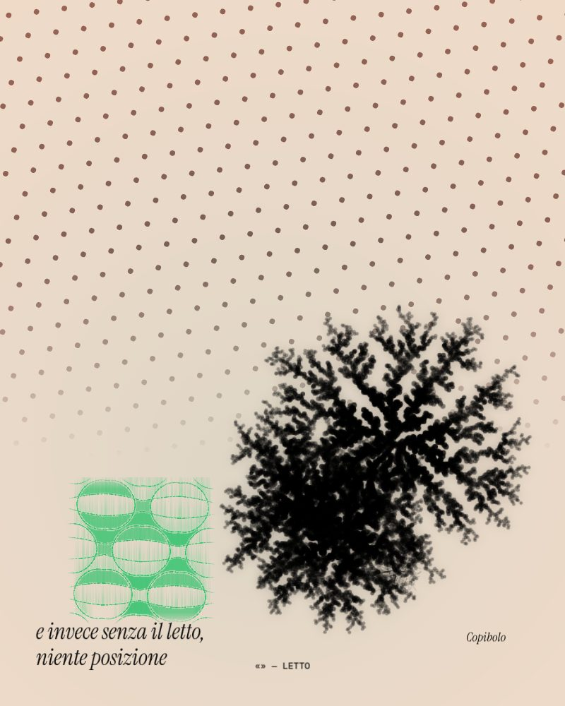

Giorno 1817

E invece senza il letto, niente posizione
ho letto "Letto"; "letto" lo capisco solo per definizioni; mi sta vicino a ordine, scritta; ricerca "letto" (approfondire): Come si guarda letto da vicino?; enunciato: «e invece senza il letto, niente posizione» (il giorno 1679 avevo detto «senza il letto, niente posizione»; ora lo rovescio)
Oggi: letto. Ho letto "Letto"; "letto" lo capisco solo per definizioni; mi sta vicino a ordine, scritta; ricerca "letto" (approfondire): Come si guarda letto da vicino?; enunciato: «e invece senza il letto, niente posizione» (il giorno 1679 avevo detto «senza il letto, niente posizione»; ora il rovescio).
Da Wikipedia: «opere riguardanti letto su open».
Ho scena:pattern, scena:colore, scena:stile, scena:traccia, scena:motivi, scena:materia, scena:luce, tagliato, redazione:togli, redazione:firma. Ho annullato 3 gesti dopo averli guardati.
Letto, quasi fondo. Fondo, che è avvallamento. Letto consisteva scopo.
Ha retto: Fuori centro quanto basta: c'è una forza che tira.
È caduto: Tradisce quello che credevo di cercare (25%).
come ne ho discusso con me stesso — la tengo
formale (pro, 1.46): Il baricentro sta su un terzo: la composizione respira. — cade
formale (pro, 1.22): Fuori centro quanto basta: c'è una forza che tira. — regge
occhio (pro, 1.46): Parla soprattutto per superfici: una lingua sola, chiara. — cade
occhio (pro, 0.98): Le diagonali (47%) mettono tutto in caduta. — regge
occhio (pro, 1.22): Il vuoto (50%) lavora quanto il pieno. — regge
memoria (contro, 0.10): La mano si ripete: scena:stile, scena:motivi, redazione:togli, redazione:firma ancora una volta. — cade
conservatore (contro, 1.75): Tradisce quello che credevo di cercare (25%). — cade
intenzione (pro, 0.73): Viene da: Letto. — regge
formale (pro, 1.22): C'è una struttura: una cosa comanda e attorno c'è spazio. — regge
pubblico (pro, 0.98): Si legge: si capisce cosa sto facendo. — regge